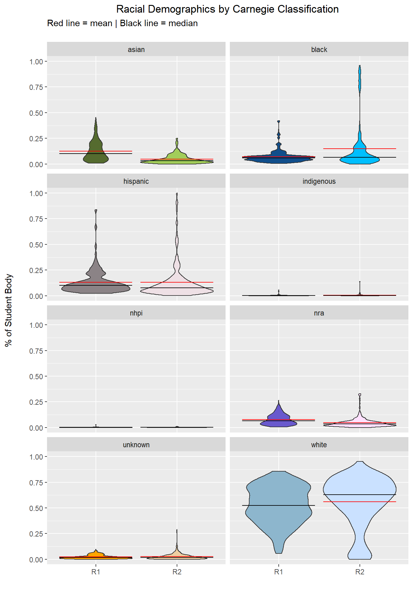
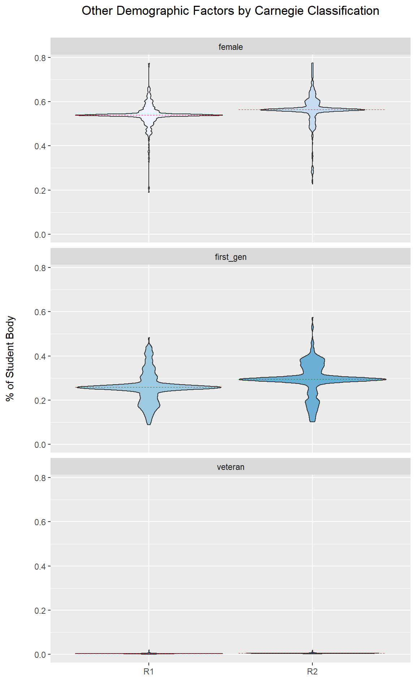

Section 5 Discussion
##
## Attaching package: 'plotly'## The following object is masked from 'package:httr':
##
## config## The following object is masked from 'package:Hmisc':
##
## subplot## The following object is masked from 'package:ggplot2':
##
## last_plot## The following objects are masked from 'package:plyr':
##
## arrange, mutate, rename, summarise## The following object is masked from 'package:stats':
##
## filter## The following object is masked from 'package:graphics':
##
## layoutg <- list(
scope = 'usa',
projection = list(type = 'albers usa'),
lakecolor = toRGB('white')
)
avgs <- distinct(FacSalary)
plot_geo() %>%
add_trace(
z = ~avgs$avgSal,
span = I(0),
colorscale = 'matter',
locations = avgs$stabbr,
locationmode = 'USA-states'
) %>%
colorbar(title = NULL) %>%
layout(geo = g, title = "Avg. Faculty Salary by State (in USD)")## Warning: `arrange_()` is deprecated as of dplyr 0.7.0.
## Please use `arrange()` instead.
## See vignette('programming') for more help
## This warning is displayed once every 8 hours.
## Call `lifecycle::last_warnings()` to see where this warning was generated.avgDM <- distinct(debtMedian)
plot_geo() %>%
add_trace(
z = ~avgDM$avgDebt,
span = I(0),
colorscale = 'viridis',
locations = avgDM$state,
locationmode = 'USA-states'
) %>%
colorbar(title = NULL) %>%
layout(geo = g, title = "Avg. Faculty Salary by State (in USD)")dem_pal <- c("darkolivegreen", "darkolivegreen3", "dodgerblue4", "deepskyblue", "lavenderblush4", "lavenderblush2", "palevioletred1", "rosybrown1", "tomato2", "sienna 1", "slateblue3", "thistle1", "orange", "navajowhite2", "lightskyblue3", "lightsteelblue1")
race_demographics <- cdem %>%
select(university, r_status, white, black, hispanic, asian, indigenous, nhpi, nra, unknown) %>%
gather("race", "percentage", 3:10, -university)
race_demographics %>%
ggplot(aes(x = factor(r_status), y = percentage, fill = interaction(r_status, race))) +
geom_violin() +
stat_summary(fun=mean, geom="crossbar", linetype = 1, size=.2, color = "red") +
stat_summary(fun=median, geom="crossbar", linetype = 1, size=.2, color = "black") +
labs(title = "Racial Demographics by Carnegie Classification",
subtitle = "Red line = mean | Black line = median\n",
x = " ",
y = "% of Student Body") +
facet_wrap(~as.factor(race), nrow = 5) +
scale_fill_manual(values = dem_pal) +
theme_gray() +
theme(axis.title.y = element_text(margin = margin(t = 0, r = 20, b = 0, l = 0)),
plot.title = element_text(hjust = .5),
legend.position = "none")
#Demographics for sparse columns
other_demographics <- cdem %>%
select(university, r_status, female, first_gen, veteran) %>%
gather("demographic", "percentage", 3:5, -university)
other_demographics %>%
ggplot(aes(x = factor(r_status), y = percentage, fill = interaction(r_status, demographic))) +
geom_violin() +
stat_summary(fun=mean, geom="crossbar", linetype = 2, size=.1, color = "red") +
labs(title = "Other Demographic Factors by Carnegie Classification",
subtitle = "",
x = " ",
y = "% of Student Body") +
facet_wrap(~as.factor(demographic), nrow = 5) +
scale_fill_brewer("Paired") +
theme_gray() +
theme(axis.title.y = element_text(margin = margin(t = 0, r = 20, b = 0, l = 0)),
plot.title = element_text(hjust = .5),
legend.position = "none")
#FUN FACTS
#Universities with the highest female/male ratio, the top 10 are mostly R2's for both categories
cdem %>%
arrange(desc(female)) %>%
filter(female > .50) %>%
distinct(university, .keep_all = TRUE) %>%
head(10)## control university r_status state female
## 1 2 Thomas Jefferson University R2 PA 0.7743842
## 2 1 CUNY Graduate School and University Center R1 NY 0.7729469
## 3 2 Clark Atlanta University R2 GA 0.7631579
## 4 2 The New School R2 NY 0.7536302
## 5 2 Nova Southeastern University R2 FL 0.7459016
## 6 2 University of New England R2 ME 0.7390681
## 7 2 Azusa Pacific University R2 CA 0.7258883
## 8 2 Howard University R2 DC 0.7177579
## 9 2 Hampton University R2 VA 0.6915352
## 10 2 Loyola University Chicago R2 IL 0.6876623
## first_gen poverty_rate veteran unemp_rate white black hispanic asian
## 1 0.3293737 8.770079 0.004961565 3.535827 0.7195 0.0705 0.0136 0.0935
## 2 0.4395604 14.690000 0.015700483 4.900000 0.2200 0.2893 0.3135 0.1183
## 3 0.3158522 8.770079 0.004961565 3.535827 0.0004 0.8366 0.0040 0.0018
## 4 0.1944012 8.770079 0.004961565 3.535827 0.3297 0.0548 0.1195 0.0926
## 5 0.3733401 8.770079 0.007741348 3.535827 0.3296 0.1617 0.2988 0.0972
## 6 0.2207308 8.770079 0.004961565 3.535827 0.8274 0.0127 0.0013 0.0354
## 7 0.3798260 7.950000 0.005801305 3.830000 0.3726 0.0611 0.3322 0.0950
## 8 0.2363936 10.550000 0.004961565 4.430000 0.0222 0.8863 0.0092 0.0141
## 9 0.1975117 9.570000 0.004961565 4.010000 0.0142 0.9593 0.0131 0.0014
## 10 0.2651357 8.770079 0.004545454 3.535827 0.5814 0.0444 0.1425 0.1156
## indigenous nhpi nra unknown year
## 1 0.0000 0.0000 0.0081 0.0664 2015
## 2 0.0024 0.0048 0.0228 0.0000 latest
## 3 0.0011 0.0000 0.0241 0.1321 2015
## 4 0.0011 0.0016 0.3234 0.0400 2016
## 5 0.0026 0.0009 0.0572 0.0319 2016
## 6 0.0042 0.0000 0.0034 0.1021 2016
## 7 0.0029 0.0106 0.0310 0.0233 latest
## 8 0.0013 0.0052 0.0616 0.0000 latest
## 9 0.0025 0.0003 0.0082 0.0008 latest
## 10 0.0006 0.0028 0.0490 0.0139 2015cdem %>%
arrange(female) %>%
filter(female < .50) %>%
distinct(university, .keep_all = TRUE) %>%
head(10)## control university r_status state
## 1 1 New Jersey Institute of Technology R1 NJ
## 2 1 Missouri University of Science and Technology R2 MO
## 3 1 Colorado School of Mines R2 CO
## 4 1 Michigan Technological University R2 MI
## 5 2 Illinois Institute of Technology R2 IL
## 6 2 Stevens Institute of Technology R2 NJ
## 7 2 Clarkson University R2 NY
## 8 2 Rensselaer Polytechnic Institute R1 NY
## 9 2 Rochester Institute of Technology R2 NY
## 10 2 Worcester Polytechnic Institute R2 MA
## female first_gen poverty_rate veteran unemp_rate white black
## 1 0.1898865 0.3375479 7.624656 0.003439973 3.292901 0.3348 0.0857
## 2 0.2278168 0.2257366 8.770079 0.004961565 3.535827 0.7815 0.0351
## 3 0.2631579 0.1719745 8.770079 0.004961565 3.535827 0.7471 0.0104
## 4 0.2765753 0.1732010 8.770079 0.004961565 3.535827 0.8609 0.0108
## 5 0.2832370 0.3137255 8.770079 0.004961565 3.535827 0.3257 0.0585
## 6 0.2847358 0.1549439 5.680000 0.004961565 3.140000 0.6433 0.0219
## 7 0.2998555 0.1528710 7.160000 0.004961565 3.590000 0.8113 0.0245
## 8 0.3294118 0.1306505 7.624656 0.003724733 3.292901 0.5907 0.0308
## 9 0.3355602 0.2022427 8.770079 0.004961565 3.535827 0.6580 0.0495
## 10 0.3477952 0.1429619 8.770079 0.004961565 3.535827 0.6294 0.0232
## hispanic asian indigenous nhpi nra unknown year
## 1 0.2210 0.2214 0.0006 0.0006 0.0443 0.0604 2015
## 2 0.0311 0.0299 0.0037 0.0007 0.0566 0.0348 2015
## 3 0.0693 0.0488 0.0013 0.0007 0.0589 0.0088 2015
## 4 0.0185 0.0105 0.0037 0.0005 0.0421 0.0254 2015
## 5 0.1553 0.1300 0.0034 0.0014 0.2648 0.0428 2015
## 6 0.1137 0.1459 0.0009 0.0000 0.0351 0.0392 latest
## 7 0.0473 0.0369 0.0030 0.0000 0.0228 0.0188 latest
## 8 0.0813 0.1012 0.0014 0.0002 0.1062 0.0187 2015
## 9 0.0711 0.0756 0.0018 0.0002 0.0585 0.0542 2015
## 10 0.0843 0.0457 0.0024 0.0000 0.1226 0.0625 2015R1s <- cdem %>%
filter(r_status == "R1")
ggplot(cdem, aes(x = female)) +
geom_histogram(bins = 40, color = "black", fill = "pink") +
labs(title = "Distribution of Female/Male Gender ratio at R1s")
R2s <- cdem %>%
filter(r_status == "R2")
ggplot(R2s, aes(x = female)) +
geom_histogram(bins = 40, color = "black", fill = "skyblue") +
labs(title = "Distribution of Female/Male Gender ratio at R2s")
r1_state <- cdem %>%
filter(r_status == "R1") %>%
group_by(state) %>%
distinct(university) %>%
count()
r2_state <- cdem %>%
filter(r_status == "R2") %>%
group_by(state) %>%
distinct(university) %>%
count()g <- list(
scope = 'usa',
projection = list(type = 'albers usa'),
lakecolor = toRGB('white')
)
r1_map <- plot_geo() %>%
add_trace(
z = ~r1_state$n,
span = I(1),
colorscale = 'Portland',
zauto = F,
zmax = 10,
zmin = 1,
locations = r1_state$state,
locationmode = 'USA-states'
) %>%
colorbar(title = "# of Schools") %>%
layout(geo = g, title = "Number of R1 Schools per State")
r2_map <- plot_geo() %>%
add_trace(
z = ~r2_state$n,
span = I(1),
colorscale = 'Portland',
zauto = F,
zmax = 10,
zmin = 1,
locations = r2_state$state,
locationmode = 'USA-states'
) %>%
colorbar(title = "# of Schools") %>%
layout(geo = g, title = "Number of R2 Schools per State")
r1_map